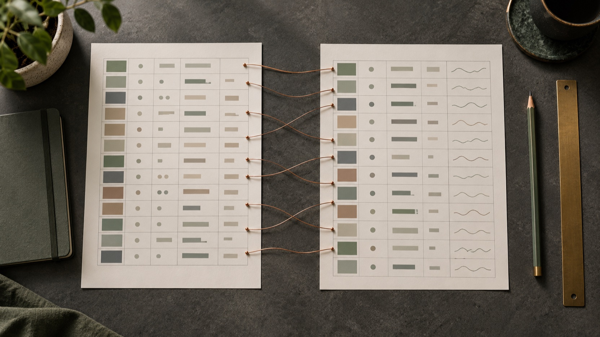
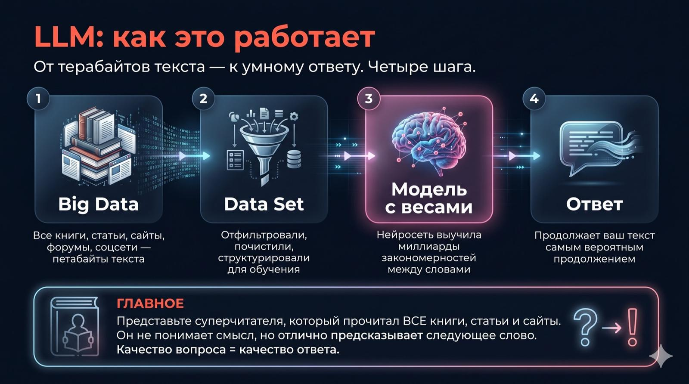
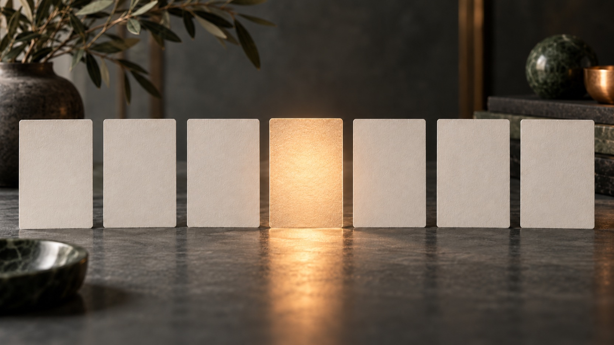
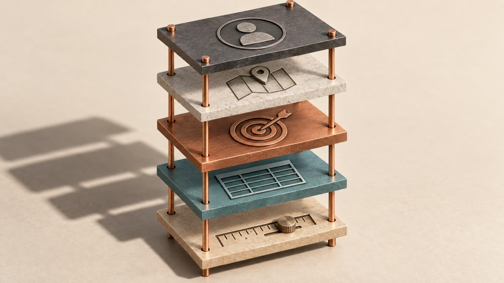
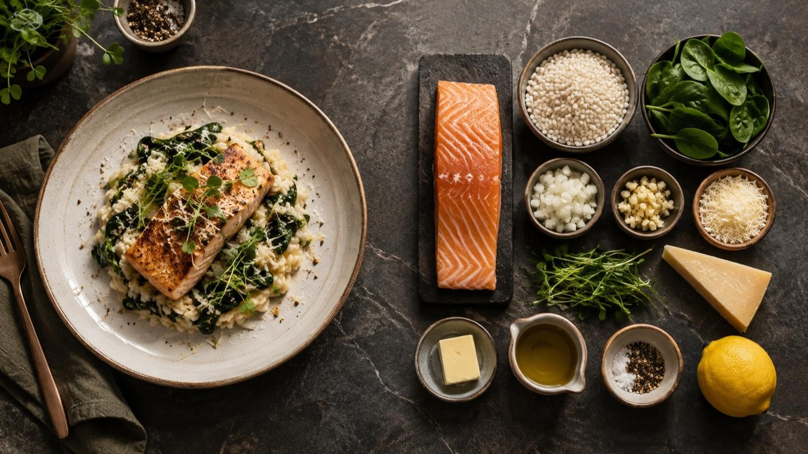
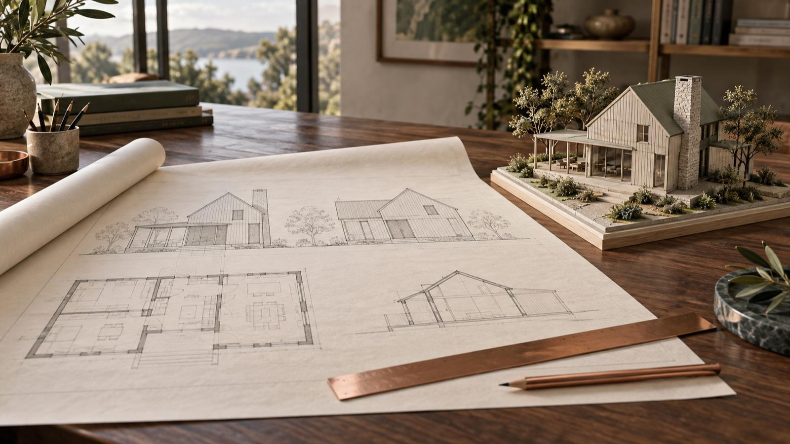
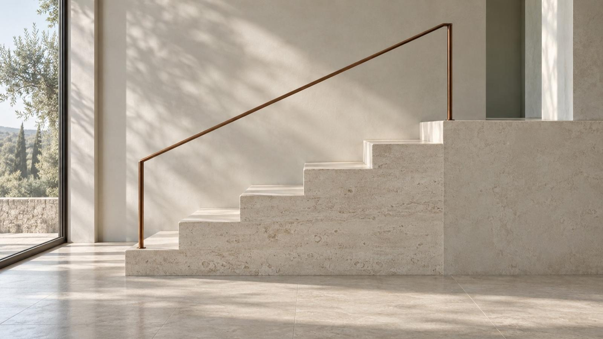
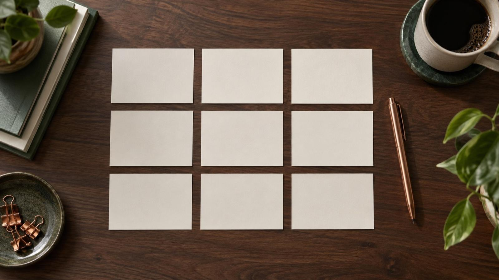

Мастер-класс для команды МФЦ Республики Башкортостан · 6 октября 2026
ИИ в работе МФЦ
Как устроены нейросети,
как настроить Qwen под себя
и как ставить задачу с первого раза.
Как устроены нейросети,
как настроить Qwen под себя
и как ставить задачу с первого раза.
25 анкет: кто в зале, что съедает время, какие задачи вы принесли.
Три мира нейросетей: Запад, Китай, Россия. Почему ответ зависит от того, как вы спросили.
Qwen узнаёт вашу роль и сам говорит, чем вам полезен.
Формула и двенадцать приёмов. Практика после каждого, а не в конце.
chat.qwen.ai, вход по почте с паролем или через Google. Можно вдвоём за одним ноутбуком или с телефона.
Наведите камеру на QR. Все промпты копируются одним касанием, печатать ничего не нужно.
Разобрали приём и тут же делаем на своей задаче. Несколько минут по таймеру.
Проходит через весь мастер-класс. Уходите с готовым результатом, а не с конспектом.
25 анкет.
Прочитали каждую.
заполнили до встречи
ещё 7 от трёх до семи лет
начальники отделов и залов, заведующие секторами, заместители директора, бухгалтерия
2 человека ещё ни разу

«Как правильно задать вопрос ИИ, чтобы получить верный чёткий ответ и быть уверенной в том, что прочитала»
«Упростить поиск нужной информации, причём корректной, чтобы не вводить руководство в заблуждение»
«Практический кейс, реально применимый в работе»
«Освободить время при создании презентаций»
«Какие есть возможности у ИИ-чатов помимо стандартных ответов на вопросы»
«Лучше писать промпты»
Три мира нейросетей: Запад, Китай, Россия.
Чем отличаются и с чем работаем сегодня.
Самые сильные. Из России нужен VPN и зарубежная карта для подписки.
Догнали Запад за полтора года. Бесплатно и без VPN.
Отстают на шаг, зато без VPN и сервер в России.
| Запад | Китай | Россия | |
|---|---|---|---|
| Сила на сложных задачах | Самые сильные | Догнали за полтора года | На шаг позади |
| Доступ из России | Нужен VPN | Без VPN | Без VPN |
| Цена | Бесплатно с лимитами, подписка за рубежом | Бесплатно | Бесплатно, расширенное по подписке |
| Русский язык и наши реалии | Хорошо | Хорошо | Лучше всех знают законы и реалии РФ |
Форму чата выбрали не случайно: переписка знакома всем. Слева история, снизу строка ввода, файлы и микрофон.
Основной инструмент мастер-класса. Бесплатно, без VPN, хорош с файлами, есть персонализация и память.
Российские, без VPN. Любой промпт из шпаргалки вставляется туда без изменений.
Бесплатный, им уже пользуются 10 из вас. Формула и приёмы работают и там.
Хватает на весь мастер-класс: формула, приёмы, файлы, голос. Подписка не нужна.
chat.qwen.ai открывается из России напрямую. Для iPhone есть приложение Qwen Studio в App Store.
Прикрепить файл, микрофон, новый чат. В настройках персонализация и память.
Откроем чёрный ящик: откуда он всё знает,
почему говорит по-человечески и почему иногда уверенно ошибается.
Самое широкое. Сюда попадает всё: калькулятор, автопилот, распознавание номеров на парковке.
Способ устройства. Распознаёт лица, считает людей на камере, подбирает ленту. Говорить не умеет.
Нейросеть, обученная на языке: Qwen, GigaChat, Алиса, DeepSeek, ChatGPT. Понимает текст и отвечает текстом.
Не ищет готовый ответ в базе, а создаёт новый текст с нуля, слово за словом.
Обучили один раз на гигантском объёме текста. Дальше он пользуется тем, что усвоил.
Схема из статьи Google 2017 года. Научила машину держать смысл длинного текста.

Четыре шага: собрали всё написанное, почистили, обучили модель, получили ответ.
Сырой интернет в модель не заливают. Сначала чистят и раскладывают: убирают мусор, дубли, чушь, размечают, что есть что. Датасет это отобранный учебник. Каким его собрали, такой модель и получится.
Внутри модели сотни миллиардов маленьких ручек-настроек. Каждая отвечает за крошечную связь между понятиями. Обучение это подкрутка всех ручек, пока ответы не станут похожи на человеческие.

Модель подбирает самое вероятное продолжение вашего текста. Слово за словом.
Самое вероятное продолжение у короткого вопроса: средний ответ для среднего человека. Такой же получит любой другой.
Меняет, что вероятно. Роль, контекст и пример сдвигают ответ к вашей ситуации.
Prompt по-английски:
подсказка.
В театре prompter это суфлёр: человек в будке у края сцены, который подсказывает актёру реплику. Актёр всё умеет. Суфлёр даёт ему, с чего начать.
Книги, статьи, форумы, законы, договоры, письма. Миллиарды страниц на десятках языков.
Вас, ваш МФЦ, ваши регламенты, что было вчера на планёрке и чего вы хотите на выходе.
Единственный способ сказать ей это. Всё, чего нет в промпте, она додумает сама.
Модель выдаёт два ответа на один вопрос.
Живой человек отмечает, какой лучше.
Тысячи людей, миллионы сравнений.
Модель повторяет то, что людям нравится.
Любая область, любой язык. Но ни дня не работал у вас.
Ни вашего МФЦ, ни заявителей, ни того, как вы любите получать результат.
Попросили «сделай хорошо», получили «хорошо» в его понимании.
Десять вариантов за минуту, правки принимает без обид.
Он подбирает правдоподобное продолжение. Правдоподобно, но неправда: скажет тем же уверенным тоном.
Цифры, суммы пошлин, сроки, даты, номера пунктов и статей, перечни документов.
Даём ему сам регламент файлом и просим номер пункта к каждой строке. Чего нет в документе, пусть пишет «уточнить».
Напиши ответ гражданину на жалобу.
Ты специалист по обращениям МФЦ. Заявительница ждала 1 час 20 минут по талону, проверка это подтвердила, в офисе открыли дополнительное окно. Ответ до 150 слов, два варианта, без канцелярита, ничего не обещать сверх сделанного.
«Какие документы нужны для регистрации права?» Справка из интернета. Любой получит то же самое.
«Составь перечень по нашему регламенту». Уже работа, но без ваших данных.
Роль, ваш регламент файлом, формат, ограничения. Результат, который можно отдать специалисту окна.
Двадцать минут, и Qwen знает вашу роль,
ваши задачи и сам говорит, чем вам полезен.
Закрыли чат, разложили новый стол. Новая задача, новый чат.
Досье о вас и инструкция качества. Это и сделаем сейчас руками.
В длинном чате начало теряется. Важное повторяйте или выносите в настройки.
Блок «РАБОЧЕЕ ДОСЬЕ» из ответа: только текст, без заголовка.
Настройки → Персонализация → поле «Что бы вы хотели, чтобы Qwen знала о вас». Сохранить.
В настройках раздел «Память»: Qwen запоминает факты о вас во всех беседах. Ход конкретной задачи в новый чат не переносится.
Одна из трёх, которые Qwen предложил на шаге 5. Или из списка двадцати пяти задач в шпаргалке.
Результат текст или таблица, есть адресат, делаете сами, и она повторяется каждую неделю.
Не страшно. Поменяете на следующей практике. Главное начать со своей, а не с придуманной.
Роль. Контекст. Задача.
Формат. Ограничения.
С чьей стороны смотреть: юрист, методист, аналитик, специалист по обращениям
Ситуация, кому уйдёт результат, что уже было
Какой результат нужен на выходе
Таблица, письмо, пункты, до N слов
Чего не делать, чего не выдумывать

Задаёт угол зрения, словарь и тон: юрист скажет одно, методист другое. Умнее модель она не делает.
Ваша ситуация. Без неё ответ для среднего человека.
Один результат на выходе. Две задачи в одном промпте, обе выйдут наполовину.
Длина, вид, тон, чего не делать и не выдумывать. Экономит все правки.
48 промптов по формуле
под задачи из ваших анкет.
Документы, срок, пошлина, отказы со ссылками на пункты
Что уточнить, какие документы, где типичная ошибка
Один список документов без повторов и порядок подачи
Памятка до 150 слов для окна и мессенджера
Таблица «было, стало, что делаем иначе» и текст рассылки
Ответ для звонка и для сообщения
Официальный и человеческий ответ до 200 слов
Что проверить, кого опросить, какие документы поднять
Ответ заявителю и план разговора со специалистом
Когда и почему растёт ожидание, три меры без найма
Живые фразы для напряжённой ситуации в окне
Короткий ответ, порядок действий, пункт инструкции
10 вопросов с ключом и разбором неверных вариантов
Кейс с подвохом, правильные шаги и типичные ошибки
Раскадровка ролика на 90 секунд
Разбор без обвинений и памятка из трёх пунктов
5 выводов с цифрами и 3 вопроса начальникам офисов
Таблица соответствий и итоговая сводная
Что убрать, что добавить, какие формулы поставить
Записка на одну страницу: вывод, факты, предложения
Отклонения по офисам и с кем поговорить первым
Записка до 150 слов: суть, обоснование, просьба
Официальное письмо с конкретным вопросом
Протокол и таблица «что, кто, срок»
Характеристика до 200 слов на фактах
Ответ: что запрашивали, что даём, чего нет
Техзадание: характеристики, поставка, гарантия, приёмка
Таблица сравнения и вопросы до решения
Письмо поставщикам, на которое отвечают без уточнений
Риски по пунктам и вопросы исполнителю
Сравнение под задачу и рекомендация
Текст вакансии до 180 слов
10 вопросов: хороший и тревожный ответ
Черновик положения по разделам
Что поправить в документе и как
План первых двух недель по дням
Пост до 100 слов в двух вариантах
12 публикаций: тема, формат, цель, призыв
10 идей и программа лучшей
5 концепций и техзадание дизайнеру
Заголовок, лид, три абзаца, цитата на согласование
Формула даёт первый ответ.
Приёмы доводят его до результата.
Совет → критика → проверка →
чистовик → нужная подача.
Видит только то, что реально сделать на этой неделе.
Мыслит годами: к чему это приведёт через год.
Ищет дыры. Обычно самый полезный из всех.
Юрист, методист, аналитик: подбирается под вашу задачу.
Прагматик, стратег, скептик, профильный. Только что прошли всю цепочку с ними.
Вы сами назначаете, кто сидит за столом: юрист, контроль качества, заявитель, ведомство. Те, кто в жизни одобрит или завернёт решение.
Модель смотрит на вашу задачу, собирает нужных специалистов и объясняет, почему выбрала каждого.
Чат не закрывайте.
Дальше образец становится промптом.

Понравился результат?
Извлеките способ его получить.

Свой голос · пост с охватами · регламент, который поняли · отчёт без вопросов.
Письмо, после которого вопрос решился · ответы лучшего специалиста · презентация, после которой приняли решение.
Техзадание без вопросов · договор со структурой, которая устраивает · картинка, которую хочется повторить.


Новые модели понимают лучше.
И промпт для них пишется иначе.
Опишите, как выглядит хороший результат и где остановиться. Путь модель найдёт сама. У OpenAI короткие промпты «на результат» дали плюс 10–15%.
Сначала модель пишет, что будет считаться «готово» и что в задачу не входит. Вы говорите «поехали».
Каждое важное требование с причиной. «НИКОГДА» и капслок новые модели выполняют с перегибом.
Не «кратко» или «подробно», а для чего ответ и сколько читать. Одни модели стали многословнее, другие короче.
Один промпт, один результат. Две задачи, обе наполовину.
Контекст, факты, пример результата. Файл скрепкой лучше пересказа.
Ответ ИИ это черновик. Цифры, имена, нормы сверяете вы.
Так спросит модель, если написать ей аббревиатуру. Это наше слово, она его не знает.
«Собери промпт по формуле: роль, контекст, задача, формат, ограничения». Промпт в шпаргалке.
ПКПВД, АИС, ОУОД и другие внутренние сокращения расшифруйте один раз: в контексте или в досье.
Помнит всё, что выше. Продолжаем и ссылаемся на ответ.
Помнит вашу персонализацию, но не задачу. Переносим данные явно.
Начинает забывать начало. Просим резюме и вставляем в новый чат. Промпт в шпаргалке.
Микрофон в строке ввода Qwen. Расскажите задачу обычными словами, 30–40 секунд.
Проверьте распознанный текст: имена, цифры. Ответьте на вопросы.
Прочитайте собранный промпт: видите в нём роль, контекст, задачу, формат, ограничения? Поправьте и «выполняй».
Модель предсказывает продолжение. Ответ зависит от того, что вы дали, а не от тарифа.
Инструкция качества, досье и память: он знает вашу роль и сам предлагает задачи.
Пять строк и 48 готовых промптов под задачи МФЦ в шпаргалке.
Вопросы первым, совет экспертов, обратный промптинг, проверка цифр, голос.
Пять рабочих дней, пять задач по формуле или через приём 2. Промпты в шпаргалке.
Решение, которое висит: цепочка совета в одном чате до чистовика.
Лучшее письмо или регламент отдела превратите в многоразовый промпт.
Модель та же.
Результат другой.